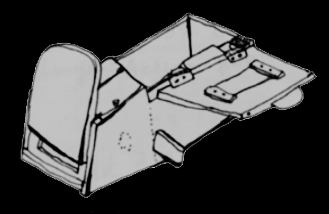

C.A. (Cache)
Greenlee
Nashville, TN · Artist Photographer

C.A. Greenlee aka Cache is preoccupied with the natural world, photographic processes, ephemera, and alchemy. Drawn to what is already at the threshold, the work investigates the evidence of lives lived, the layers of desire paths, and the conundrum of disappearing acts. By oscillating between the forensic and the fantastical, the work asks the viewer to be alive to the simultaneity of when.
Current research spans the biological and the archival, including photograms of cicadas, contact prints from found glass slides and images made using beelining pinhole cameras. Technical inquiries are balanced by staged rituals exploring the ancient architecture of the hive and the structures of unity and devotion.
Early darkroom exploration took place as a teenager out of a trailer in rural Alabama. Now holding an MFA and BFA, Cache maintains a private practice and teaches community darkroom education at Watkins College of Art at Belmont University. As a lifelong learner, development has recently expanded beyond the darkroom; this website was hand-coded from a blank terminal.


Spending the majority of their lives in complete darkness, cicadas emerge every seventeen years to shed their shell and be known. In a similar slumber, after decades being tucked away, silver images cased in albumen binders are released from their glass envelopes.
Proofing glass slides and printing photograms create a 1:1 record of the biological and the archival. While the positive glass plate inverts history, the cicadas cast an ethereal and unrepeatable silhouette. Both methods require direct contact with a light-sensitive surface as they reveal what had been buried before.


An investigation both familial and forensic: a dive into lineal memory, while documenting cultural and political echoes that remain startlingly relevant today. This ancestral archive has been in a state of active disappearance; the material is so brittle that handling it is to witness its destruction. And yet, to do nothing is to risk losing it completely. Through large-format digital rendering, disintegrating artifacts are being preserved digitally and on archival paper.

The hive's survival is tied to the success of the honey bee's ability to communicate through dance. Detailed directions are encoded in circular patterns that others repeat, allowing them to make a beeline towards nectar: the catalyst for the world's earliest form of sweetness.
Dance has long been a practice for human survival too. The vertical axis around which the dancer orbits is an ancient piece of architecture, unchanged through time; a line connecting the many hands of those who came before; a symbol continuously imbued with meanings that can alternate between the taboo and the sacred.
Regardless of perception, whether fueled by craving or fear, both bee and dancer maintain the divine ability to transform labor into honey and movement into spells. My dual role as practitioner and photographer allows me to translate the nuances of their expression. Portraits in this series serve as a testament to collective ritual and longstanding tradition.


Beelining Pinhole Camera
The bee box is divided into two compartments, with windows that open and close. When I realized the box had to be light-proof, the parallel with pinhole cameras became clear: handheld, hand-made, light-tight tools that operate by harnessing light. This realization prompted a functional shift: the tool for beelining became a vessel for photographic research.
The back wall is replaced with a film plate; a tiny hole drilled into the front becomes the aperture. While the honeybee gathers, I uncover the opening to the landscape she was found in, which then projects onto light sensitive material alongside her ghostly silhouette.



This iteration of the beelining pinhole camera marks the beginning of a broader exploration. New strategies and a second-generation camera with an expanded film format are currently in development.